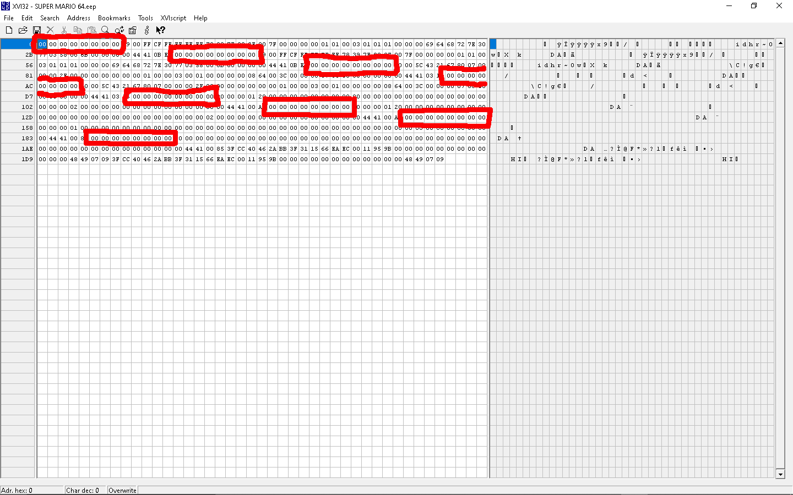

Cap Position Data
This section of memory is never used because the cap is always found in a
- 0x00 (uint8): Cap Level - The level that the cap was left at
- 0x01 (uint8): Cap Area - The Sub-Area inside the level that the cap was lost in
- 0x02-0x03 (int16): Cap Posistion X - The X position of the lost cap
- 0x04-0x05 (int16): Cap Posistion Y - The X position of the lost cap
- 0x06-0x07 (int16): Cap Posistion Z - The X position of the lost cap
Visual Map
